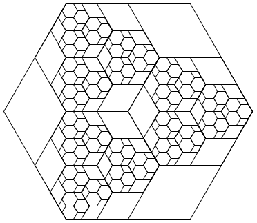
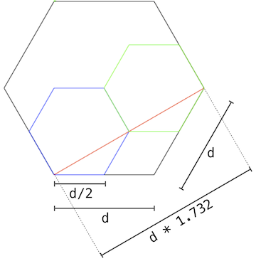

Project 4: A Scheme Interpreter
Eval calls apply,
which just calls eval again!
When does it all end?

Introduction
In this project, you will develop an interpreter for a subset of the Scheme language. As you proceed, think about the issues that arise in the design of a programming language; many quirks of languages are byproducts of implementation decisions in interpreters and compilers. The subset of the language used in this project is described in the functional programming section of Composing Programs.
You will also implement some small programs in Scheme. Scheme is a simple but powerful functional language. You should find that much of what you have learned about Python transfers cleanly to Scheme as well as to other programming languages. To learn more about Scheme, you can read Structure and Interpretation of Computer Programs online for free. Examples from Chapters 1 and 2 are included as test cases for this project. Language features from Chapters 3, 4, and 5 are not part of this project, but of course you are welcome to extend your interpreter to implement more of the language. Since we only include a subset of the language, your interpreter will not exactly match the behavior of other interpreters such as STk.
The project concludes with an open-ended graphics contest that challenges you to produce recursive images in only a few lines of Scheme. As an example, the picture above abstractly depicts all the ways of making change for $0.50 using U.S. currency. All flowers appear at the end of a branch with length 50. Small angles in a branch indicate an additional coin, while large angles indicate a new currency denomination. In the contest, you too will have the chance to unleash your inner recursive artist.
This project includes several files, but all of your changes will be made to
the first four: scheme.py, scheme_reader.py, questions.scm, and
tests.scm. You can download all of the project code as a zip
archive, which contains the following files:
scheme.py: the Scheme evaluatorscheme_reader.py: the Scheme syntactic analyzerquestions.scm: a collection of functions written in Schemetests.scm: a collection of test cases written in Schemescheme_tokens.py: a tokenizer for Schemescheme_primitives.pyprimitive Scheme proceduresbuffer.py: a buffer implementationucb.py: utility functions for 61Aok: the autogradertests: a directory of tests used byok
You'll work in a team of two people, Partner A and Partner B. In each part, you will do some of the work separately and some together with your partner. For example, if a problem is marked 5A, then it is a solo problem for Partner A. Both partners should read, think about, and understand the solution to all questions. Feel free to help each other on the solo questions. If you choose to work on the whole project alone, you must complete all questions yourself.
In Parts I and II, you will develop the interpreter in several stages:
- Reading Scheme expressions
- Symbol evaluation
- Calling built-in procedures
- Definitions
- Lambda expressions and procedure definition
- Calling user-defined procedures
- Evaluation of special forms
In Part III, you will implement Scheme procedures.
Logistics
This is a 11-day project. You may work with one other partner. You should not share your code with students who are not your partner or copy from anyone else's solutions.
In the end, you will submit one project for both partners. The project is worth 28 points. 26 points are assigned for correctness, and 2 points for the overall composition of your program.
You will turn in the following files:
scheme_reader.pyscheme.pyquestions.scmtests.scm
You do not need to modify or turn in any other files to complete the project. To submit the project, run the following command:
python3 ok --submitYou will be able to view your submissions on the OK dashboard.
For the functions that we ask you to complete, there may be some initial code that we provide. If you would rather not use that code, feel free to delete it and start from scratch. You may also add new function definitions as you see fit.
However, please do not modify any other functions. Doing so may result in your code failing our autograder tests. Also, please do not change any function signatures (names, argument order, or number of arguments).
Testing
Throughout this project, you should be testing the correctness of your code. It is good practice to test often, so that it is easy to isolate any problems.
We have provided an autograder called ok to help you with
testing your code and tracking your progress. The first time you run
the autograder, you will be asked to log in with your OK account using your web browser. Please do so. Each time you run
ok, it will back up your work and progress on our
servers.
The primary purpose of ok is to test your implementations, but there
is a catch. At first, the test cases are locked. To unlock tests,
run the following command from your terminal:
python3 ok -uThis command will start an interactive prompt that looks like:
===================================================================== Assignment: A Scheme Interpreter OK, version ... ===================================================================== ~~~~~~~~~~~~~~~~~~~~~~~~~~~~~~~~~~~~~~~~~~~~~~~~~~~~~~~~~~~~~~~~~~~~~ Unlocking tests At each "? ", type what you would expect the output to be. Type exit() to quit --------------------------------------------------------------------- Question 0 > Suite 1 > Case 1 (cases remaining: 1) >>> Code here ?
At the ?, you can type what you expect the output to be.
If you are correct, then this test case will be available the next time
you run the autograder.
The idea is to understand conceptually what your program should do first, before you start writing any code.
Once you have unlocked some tests and written some code, you can check the correctness of your program using the tests that you have unlocked:
python3 ok
Most of the time, you will want to focus on a particular question.
Use the -q option as directed in the problems below.
The tests folder is used to store autograder tests, so make sure
not to modify it. You may lose all your unlocking progress if you
do. If you need to get a fresh copy, you can download the
zip archive and copy it over, but you
will need to start unlocking from scratch.
Details of Scheme
Read-Eval-Print. The interpreter reads Scheme expressions, evaluates them, and displays the results.
scm> 2
2
scm> (+ 2 3)
5
scm> (((lambda (f) (lambda (x) (f f x)))
(lambda (f k) (if (zero? k) 1 (* k (f f (- k 1)))))) 5)
120The starter code for your Scheme interpreter in scheme.py can successfully
evaluate the first expression above, since it consists of a single number. The
second (a primitive call) and the third (a computation of 5 factorial) will not
work just yet.
Load. Our load procedure differs from standard Scheme in that we use a
symbol for the file name. For example, to load tests.scm, evaluate the
following call expression.
scm> (load 'tests)Symbols. Unlike some implementations of Scheme, in this project numbers and boolean values cannot be used as symbols. Also, symbols are always lowercased. This is illustrated in the following example, which won't work until a little bit later:
scm> (define 2 3)
Traceback (most recent call last):
0 (#define 2 3)
Error: bad argument to define
scm> 'Hello
helloTurtle Graphics. In addition to standard Scheme procedures, we include
procedure calls to the Python turtle package. This will come in handy in Part
IV, for the contest.
You can read the turtle module documentation online.
Note: The turtle Python module may not be installed by default on your
personal computer. However, the turtle module is installed on the
instructional machines. So, if you wish to create turtle graphics for this
project (i.e. for the contest), then you'll either need to setup turtle on
your personal computer or use university computers.
Development
Testing. The tests.scm file contains a long list of example Scheme
expressions and their expected values.
(+ 1 2)
; expect 3
(/ 1 0)
; expect ErrorYou can compare the output of your interpreter to the expected output by running:
python3 ok -q tests.scmFor the example above, your scheme interpreter will evaluate (+ 1 2) using
your code in scheme.py, then output a test failure if 3 is not returned as
the value. The second example tests for an error (but not the specific error
message.
Only a small subset of tests are designated to run by default because
tests.scm contains an (exit) call near the beginning, which halts testing.
As you complete more of the project, you should move or remove this call.
Note: your interpreter doesn't know how to exit until Problems 3 and 4 are
completed; all tests will run until then.
Important: As you proceed in the project, add new tests to the top of
tests.scm to verify the behavior of your implementation. Your composition
score for this project will depend on whether or not you have tested your
implementation in ways that are different from the ok tests.
Exceptions. As you develop your Scheme interpreter, you may find that Python
raises various uncaught exceptions when evaluating Scheme expressions. As a
result, your Scheme interpreter will halt. Some of these may be the results of
bugs in your program, and some may be useful indications of errors in user
programs. The former should be fixed (of course!) and the latter should be
handled, usually by raising a SchemeError. All SchemeError exceptions are
handled and printed as error messages by the read_eval_print_loop function in
scheme.py. Ideally, there should never be unhandled Python exceptions for any
input to your interpreter.
Running Your Scheme Interpreter
To run your Scheme interpreter in an interactive session, type:
python3 scheme.pyYou can use your Scheme interpreter to evaluate the expressions in an input file
by passing the file name as a command-line argument to scheme.py:
python3 scheme.py tests.scmCurrently, your Scheme interpreter can handle a few simple expressions, such as:
scm> 1
1
scm> 42
42
scm> true
TrueTo exit the Scheme interpreter, press Ctrl-d or evaluate the exit procedure
(after completing problems 3 and 4):
scm> (exit)Part I: The Reader
The first part of this project deals with reading and parsing user input. All changes in this part should be made in
scheme_reader.py.
The function scheme_read in scheme_reader.py parses a Buffer (see
buffer.py) instance that returns valid Scheme tokens when its current and
pop methods are invoked. This function returns the next full Scheme
expression in the src buffer, using this representation:
| Scheme Data Type | Our Internal Representation |
|---|---|
| Numbers | Python's built-in int and float data
types. |
| Symbols | Python's built-in string data type. |
Booleans (#t, #f) |
Python's built-in True, False values. |
| Pairs | The Pair class, defined in
scheme_reader.py. |
nil |
The nil object, defined in
scheme_reader.py. |
Problem 1 (1 pt)
Complete the scheme_read function in scheme_reader.py by adding support for
quotation. This function selects behavior based on the type of the next token:
- If the next token in
srcis the string"nil", return thenilobject. (provided) - If the next token is not a delimiter, then it is self-evaluating. Return it. (provided)
- If the current token is a single quote (such as the first character of
'bagel), then return a quote special form (such as(quote bagel)). (you'll implement this) - If the current token is a left parenthesis
"(", return the result ofread_tail. (provided)
Some examples of how to handle the quote form:
(quote bagel)is converted toPair('quote', Pair('bagel', nil))'bagelis equivalent to(quote bagel), so it is also converted toPair('quote', Pair('bagel', nil))
Test your understanding and implementation before moving on:
python3 ok -q 01 -u
python3 ok -q 01Problem 2 (2 pt)
Complete the read_tail function in scheme_reader.py by adding support for
dotted lists. A dotted list in Scheme is not necessarily a well-formed list, but
instead has an arbitrary second attribute that may be any Scheme value:
(1 2 . 3)should be converted toPair(1, Pair(2, 3))
The read_tail function expects to read the rest of a list or dotted list,
assuming the open parenthesis of that list has already been popped by
scheme_read.
Consider the case of calling scheme_read on input "(1 2 . 3)". The
read_tail function will be called on the suffix "1 2 . 3)", which is
- The pair consisting of the Scheme value
1and the value of the tail "2 . 3)", which is - The pair consisting of the Scheme value
2and the Scheme value3.
Thus, read_tail would return Pair(1, Pair(2, 3)).
Hint: In order to verify that only one element follows a dot, after encountering a
'.', read one additional expression and then check to see that a closing parenthesis follows.
To complete this question, you will need to interact with the parameter src,
which is a Buffer object (defined in buffer.py). There are two main ways to
interact with src:
src.pop(): returns the first token insrcand also removes the token fromsrc.For example, if
srccurrently contains the tokens[4, '.', 3, ')'], thensrc.pop()will return4, andsrcwill be left with['.', 3, ')'].src.current(): returns the first token insrc, but does not remove the token fromsrc.For example, if
srccurrently contains the tokens[4, '.', 3, ')'], thensrc.current()will return4;srcremains the same.
Test your understanding and implementation before moving on:
python3 ok -q 02 -u
python3 ok -q 02You should also test your parser in the following way:
- run the doctests for scheme_reader.py (
python3 -m doctest scheme_reader.py) test interactively by running
python3 scheme_reader.py. Every time you type in a value into the prompt, both thestrandreprvalues of the parsed expression are printed. You can try the following inputs:read> 42 str : 42 repr: 42 read> '(1 2 3) str : (quote (1 2 3)) repr: Pair('quote', Pair(Pair(1, Pair(2, Pair(3, nil))), nil)) read> nil str : () repr: nil read> '() str : (quote ()) repr: Pair('quote', Pair(nil, nil)) read> (1 (2 3) (4 (5))) str : (1 (2 3) (4 (5))) repr: Pair(1, Pair(Pair(2, Pair(3, nil)), Pair(Pair(4, Pair(Pair(5, nil), nil)), nil))) read> (1 (9 8) . 7) str : (1 (9 8) . 7) repr: Pair(1, Pair(Pair(9, Pair(8, nil)), 7)) read> (hi there . (cs . (student))) str : (hi there cs student) repr: Pair('hi', Pair('there', Pair('cs', Pair('student', nil))))
Part II: The Evaluator
All changes in this part should be made in
scheme.pyFor each question, also add a few tests to the top oftests.scmto verify the behavior of your implementation.
In the implementation given to you, the evaluator can only evaluate
self-evaluating expressions: numbers, booleans, and
nil.
Read the first two sections of scheme.py, called Eval/Apply and Environments.
- The
scheme_evalandscheme_applyfunctions are complete, but most of the functions or methods they use are not yet implemented. - The
apply_primitiveandmake_call_framefunctions assist in applying built-in and user-define procedures, respectively. - The Frame class implements an environment frame.
- The LambdaProcedure class represents user-defined procedures.
These are all of the essential components of the interpreter; the rest of scheme.py defines special forms and input/output behavior.
Test your understanding of how these components fit together by unlocking the
tests for eval_apply.
python3 ok -q eval_apply -uSome Core Functionality
Problem 3 (1 pt)
Implement the lookup method of the Frame class. It takes a symbol (Python
string) and returns the value bound to that name in the first Frame of the
environment in which that name is found. A Frame represents an environment
via two instance attributes:
bindingsis a dictionary that maps Scheme symbol keys (represented as Python strings) to Scheme values.parentis the parentFrameinstance. The parent of the Global Frame isNone.
Your lookup implementation should:
- Return the value of the symbol in
self.bindingsif it exists. - Otherwise,
lookupthat symbol in theparentif theparentexists. - Otherwise, raise a
SchemeError. (provided)
Test your understanding and implementation before moving on:
python3 ok -q 03 -u
python3 ok -q 03After you complete this problem, you can open your Scheme interpreter (with python3 scheme.py). You should be able to lookup up built-in procedure names:
scm> +
#[+]
scm> odd?
#[odd?]
scm> display
#[display]However, your Scheme interpreter will still not be able to apply these procedures. Let's fix that.
Problem 4 (2 pt)
Implement apply_primitive, which is called by scheme_apply. Primitive
procedures are applied by calling a corresponding Python function that
implements the procedure.
Scheme primitive procedures are represented as instances of the
PrimitiveProcedure class, defined in scheme_primitives.py. A
PrimitiveProcedure has two instance attributes:
fnis the Python function that implements the primitive Scheme procedure.use_envis a boolean flag that indicates whether or not this primitive procedure will expect the current environment to be passed in as the last argument. The environment is required, for instance, to implement the primitiveevalprocedure.
To see a list of all Scheme primitive procedures used in the project, look in
the scheme_primitives.py file. Any function decorated with @primitive will
be added to the globally-defined _PRIMITIVES list.
The apply_primitive function takes a PrimitiveProcedure instance, a Scheme
list of argument values, and the current environment. Your implementation
should:
- Convert the Scheme list to a Python list of arguments. (provided)
- If the
procedure.use_envisTrue, then add the current environmentenvas the last argument to this Python list. - Call
procedure.fnon all of those arguments (Hint: use*argsnotation). - If calling the function results in a
TypeErrorexception being thrown, then handle it and raise aSchemeErrorin theexceptclause (raise SchemeError).
Test your understanding and implementation before moving on:
python3 ok -q 04 -u
python3 ok -q 04Your interpreter should now be able to evaluate primitive procedure calls, giving you the functionality of the Calculator language and more.
scm> (+ 1 2)
3
scm> (* 3 4 (- 5 2) 1)
36
scm> (odd? 31)
TrueProblem 5A (1 pt)
There are two missing parts in the do_define_form function, which handles the
(define ...) special forms. Implement just the first part, which binds
names to values but does not create new procedures. do_define_form should
return the name after performing the binding.
scm> (define tau (* 2 3.1415926))
tauTest your understanding and implementation before moving on:
python3 ok -q 05A -u
python3 ok -q 05AYou should now be able to give names to values and evaluate the resulting symbols.
scm> (define x 15)
x
scm> (define y (* 2 x))
y
scm> y
30
scm> (+ y (* y 2) 1)
91
scm> (define x 20)
x
scm> x
20
scm> (eval (define tau 6.28))
6.28Problem 6B (1 pt)
Implement the do_quote_form function, which evaluates the quote special
form.
Test your understanding and implementation before moving on:
python3 ok -q 06B -u
python3 ok -q 06BYou should now be able to evaluate quoted expressions.
scm> 'hello
hello
scm> '(1 . 2)
(1 . 2)
scm> '(1 (2 three . (4 . 5)))
(1 (2 three 4 . 5))
scm> (car '(a b))
a
scm> (eval (cons 'car '('(1 2))))
1At this point in the project, your Scheme interpreter should support the following features:
- Evaluate atoms, which include numbers, booleans, nil, and symbols,
- Evaluate the
quotespecial form, - Evaluate lists,
- Define symbols, and
- Call primitive procedures, for example evaluating
(+ (- 4 2) 5).
User-Defined Procedures
User-defined procedures are represented as instances of the LambdaProcedure
class. A LambdaProcedure instance has three instance attributes:
formalsis a Scheme list of the formal parameters (symbols) that name the arguments of the procedure.bodyis a single Scheme expression; the body of the procedure.envis the environment in which the procedure was defined.
Problem 7 (2 pt)
Implement the eval_all function (that is called from do_begin_form), which
will complete the implementation of the begin special form. A begin
expression is evaluated by evaluating all sub-expressions in order. The value
of the begin expression is the value of the final sub-expression.
scm> (begin (+ 2 3) (+ 5 6))
11
scm> (define x (begin (display 3) (newline) (+ 2 3)))
3
x
scm> (+ x 3)
8
scm> (begin (print 3) '(+ 2 3))
3
(+ 2 3)If eval_all is passed an empty list of expressions (nil), then it should
return the special value okay, which represents an undefined Scheme value.
Test your understanding and implementation before moving on:
python3 ok -q 07 -u
python3 ok -q 07Problem 8 (1 pt)
Implement the do_lambda_form method, which creates LambdaProcedure instances
by evaluating lambda expressions. While you cannot call a user-defined
procedure yet, you can verify that you have created the procedure correctly by
evaluating a lambda expression:
scm> (lambda (x y) (+ x y))
(lambda (x y) (+ x y))In Scheme, it is legal to place more than one expression in the body of a
procedure (although zero body expressions is disallowed). The body attribute
of a LambdaProcedure instance is a Scheme list of body expressions.
Test your implementation before moving on:
python3 ok -q 08Problem 9A (2 pt)
Currently, your Scheme interpreter is able to bind symbols to user-defined procedures in the following manner:
scm> (define f (lambda (x) (* x 2)))
fHowever, we'd like to be able to use the shorthand form of defining named procedures:
scm> (define (f x) (* x 2))
fModify the do_define_form function so that it correctly handles the shorthand
procedure definition form above. Make sure that it can handle multi-expression
bodies.
Test your understanding and implementation before moving on:
python3 ok -q 09A -u
python3 ok -q 09AYou should now find that defined procedures evaluate to lambda procedures.
scm> (define (square x) (* x x))
square
scm> square
(lambda (x) (* x x))Problem 10 (2 pt)
Implement the make_child_frame method of the Frame class, which:
- Creates a new
Frameinstance, the parent of which isself. (provided) - If the number of inputted argument values does not match with the number of
formal parameters, raise a
SchemeError. - Binds formal parameters to their corresponding argument values in the newly created frame.
Test your understanding and implementation before moving on:
python3 ok -q 10 -u
python3 ok -q 10Problem 11B (2 pt)
Implement the check_formals function to raise an error whenever the Scheme
list of formal parameters passed to it is invalid. Raise a SchemeError if
the list of formals is not a well-formed list of symbols or if any symbol is
repeated.
Hint: The scheme_symbolp function in scheme_primitives.py returns whether
a value is a Scheme symbol.
Test your implementation before moving on:
python3 ok -q 11BProblem 12 (2 pt)
Implement the make_call_frame function called by scheme_apply (at the end
of the Eval/Apply section). It should create a new Frame instance using the
make_child_frame method of the appropriate parent frame, binding formal
parameters to argument values.
Test your understanding and implementation before moving on:
python3 ok -q 12 -u
python3 ok -q 12At this point in the project, your Scheme interpreter should support the following features:
- Create procedures using
lambdaexpressions, - Define named procedures using
defineexpressions, and - Call user-defined procedures.
Now is an excellent time to revisit the tests in
tests.scmand ensure that you pass the tests that involve definition (Sections 1.1.2 and 1.1.4). You should also add additional tests of your own at the top oftests.scmto verify that your interpreter is behaving as you expect.
Special Forms
Logical special forms include if, and, or, and cond. These expressions
are special because not all of their sub-expressions may be evaluated.
In Scheme, only False is a false value. All other values are true values. You
can test whether a value is a true value or a false value using the provided
Python functions scheme_true and scheme_false, defined in
scheme_primitives.py. (Note that Scheme traditionally uses #f to indicate a
false value, which is equivalent to false or False. Similarly, true and
True and #t are all equilvalent.)
Problem 13 (1 pt)
Implement do_if_form so that if expressions are evaluated correctly. This
function should evaluate either the second (consequent) or third (alternative)
expression of the if expression, depending on whether the value of the first
(predicate) expression is true.
scm> (if (= 4 2) 'a 'b)
b
scm> (if (= 4 4) (* 1 2) (+ 3 4))
2It is legal to pass in just two expressions to the if special form. In this
case, you should return the second expression if the first expression evaluates
to a true value. Otherwise, return the special okay value, which represents
an undefined value.
scm> (if (= 4 2) 'a)
okayHint:
okayis defined inscheme_primitives.pyand imported toscheme.py, so you can refer to it directly asokayin your Python code. The valueokayevaluates to itself.
Test your understanding and implementation before moving on:
python3 ok -q 13 -u
python3 ok -q 13Problem 14B (2 pt)
Implement do_and_form and do_or_form so that and and or expressions are
evaluated correctly.
The logical forms and and or are short-circuiting. For and, your
interpreter should evaluate each sub-expression from left to right, and if any
of these evaluates to a false value, then False is returned. Otherwise,
it should return the value of the last sub-expression. If there are no
sub-expressions in an and expression, it evaluates to True.
scm> (and)
True
scm> (and 4 5 6) ; all operands are true values
6
scm> (and 4 5 (+ 3 3))
6
scm> (and True False 42 (/ 1 0)) ; short-circuiting behavior of and
FalseFor or, evaluate each sub-expression from left to right. If any
sub-expression evaluates to a true value, return that value. Otherwise, return
False. If there are no sub-expressions in an or expression, it evaluates to
False.
scm> (or)
False
scm> (or 5 2 1) ; 5 is a true value
5
scm> (or False (- 1 1) 1) ; 0 is a true value in Scheme
0
scm> (or 4 True (/ 1 0)) ; short-circuiting behavior of or
4Test your understanding and implementation before moving on:
python3 ok -q 14B -u
python3 ok -q 14BProblem 15A (2 pt)
Implement do_cond_form so that it returns the value of the first result
sub-expression corresponding to a true predicate, or the sub-expression
corresponding to else. Your implementation should match the following
examples and the additional tests in tests.scm.
scm> (cond ((= 4 3) 'nope)
((= 4 4) 'hi)
(else 'wait))
hi
scm> (cond ((= 4 3) 'wat)
((= 4 4))
(else 'hm))
True
scm> (cond ((= 4 4) 'here (+ 40 2))
(else 'wat 0))
42Hint: For the last example, where the body of a cond case has multiple
expressions, use eval_all.
The value of a cond is undefined if there are no true predicates and no
else. In such a case, do_cond_form should return okay.
scm> (cond (False 1) (False 2))
okayTest your understanding and implementation before moving on:
python3 ok -q 15A -u
python3 ok -q 15AProblem 16 (2 pt)
The let special form binds symbols to values locally, giving them their
initial values. For example:
scm> (define x 'hi)
x
scm> (define y 'bye)
y
scm> (let ((x 42)
(y (* 5 10)))
(list x y))
(42 50)
scm> (list x y)
(hi bye)Implement make_let_frame, which returns a child frame of env that binds
the symbol in each element of bindings to the value of the corresponding
expression.
You may find the following functions and methods useful:
check_form: this function can be used to check the structure of each binding.make_child_frame: this method (which you implemented in Problem 10) takes twoPairs offormalparemeters andvalues, and creates a new frame with all theformals bound to the correspondingvalues.
Test your understanding and implementation before moving on:
python3 ok -q 16 -u
python3 ok -q 16Problem 17 (2 pt)
Implement do_mu_form to evaluate the mu special form, a non-standard Scheme
expression type. A mu expression is similar to a lambda expression, but
evaluates to a MuProcedure instance that is dynamically scoped. The
MuProcedure class has been provided for you.
Additionally, update make_call_frame so that the call frame used to evaluate
the body of a MuProcedure is dynamically scoped. Calling a LambdaProcedure
uses lexical scoping: the parent of the new call frame is the environment in
which the procedure was defined. Calling a MuProcedure created by a mu
expression uses dynamic scoping: the parent of the new call frame is the
environment in which the call expression was evaluated. As a result, a
MuProcedure does not need to store an environment as an instance attribute.
It can refer to names in the environment from which it was called.
scm> (define f (mu (x) (+ x y)))
f
scm> (define g (lambda (x y) (f (+ x x))))
g
scm> (g 3 7)
13Test your understanding and implementation before moving on:
python3 ok -q 17 -u
python3 ok -q 17Congratulations! Your Scheme interpreter implementation is now complete!
You should have been adding tests to the top of
tests.scmas you did each problem. The tests that you have written tests will be evaluated as part of your composition score for the project.To run your tests, run the command:
python3 ok -q tests.scmMake sure to remove all of the
(exit)commands, so that all the tests are run!
Part III: Write Some Scheme
Not only is your Scheme interpreter itself a tree-recursive program, but it is
flexible enough to evaluate other recursive programs. Implement the following
procedures in Scheme in the questions.scm file.
All changes in this part should be made in
questions.scm.
Problem 18 (1 pt)
Implement the enumerate procedure, which takes in a list of values and returns
a list of two-element lists, where the first element is the index of the value,
and the second element is the value itself.
scm> (enumerate '(3 4 5 6))
((0 3) (1 4) (2 5) (3 6))
scm> (enumerate '())
()Test your implementation before moving on:
python3 ok -q 18Problem 19 (2 pt)
Implement the list-change procedure, which lists all of the ways to make change
for a positive integer total amount of money, using a list of currency
denominations, which is sorted in descending order. The resulting list of ways
of making change should also be returned in descending order.
To make change for 10 with the denominations (25, 10, 5, 1), we get the possibliites:
10
5, 5
5, 1, 1, 1, 1, 1
1, 1, 1, 1, 1, 1, 1, 1, 1, 1To make change for 5 with the denominations (4, 3, 2, 1), we get the possibilities:
4, 1
3, 2
3, 1, 1
2, 2, 1
2, 1, 1, 1
1, 1, 1, 1, 1You may find that implementing a helper function, cons-all, will be useful
for this problem. cons-all takes in an element, first and a list of lists,
rests, and adds first to the beginning of each list in rests:
scm> (cons-all 1 '((2 3) (2 4) (3 5)))
((1 2 3) (1 2 4) (1 3 5))Test your implementation before moving on:
python3 ok -q 19Problem 20 (0 pt; optional)
Implement the hax procedure that draws the following recursive illustration
when passed two arguments, a side length d and recursive depth k. The
example below is drawn from (hax 200 4).

To see how this illustration is constructed, consider this annotated version that gives the relative lengths of lines of the component shapes in the figure.

Part IV: Extra Credit
You have the opportunity to earn a total of 5 extra credit points on this project.
Exra Credt Problem 21 (1 pt)
In Scheme, source code is data. Every non-primitive expression is a list, and we can write procedures that manipulate other programs just as we write procedures that manipulate lists.
Re-writing programs can be useful: we can write an interpreter that only
handles a small core of the language, and then write a procedure analyze that
converts other special forms into the core language before a program is passed
to the interpreter.
For example, the let special form is equivalent to a call expression that
begins with a lambda expression. Both create a new frame extending the
current environment and evaluate a body within that new environment.
(let ((x 42) (y 16)) (+ x y))
;; Is equivalent to:
((lambda (x y) (+ x y)) 42 16)We can use this rule to rewrite all let special forms into lambda
expressions. We prevent evaluation of a program by quoting it, and then pass it
to analyze:
scm> (analyze '(let ((a 1) (b 2)) (+ a b)))
((lambda (a b) (+ a b)) 1 2)
scm> (analyze '(let ((a 1)) (let ((b a)) b)))
((lambda (a) ((lambda (b) b) a)) 1)In order to handle all programs, analyze must be aware of Scheme syntax.
Since Scheme expressions are recursively nested, analyze must also be
recursive. In fact, the structure of analyze looks like that of
scheme_eval:
(define (analyze expr)
(cond ((atom? expr) <Analyze atom>)
((quoted? expr) <Analyze quoted>)
((lambda? expr) <Analyze lambda>)
((define? expr) <Analyze define>)
((let? expr) <Analyze let>)
(else <Analyze other>)))Implement the analyze procedure, which takes in an expression and converts
all of the let special forms in the expression into their equivalent lambda
expressions.
Hint: You may want to implement apply-to-all and zip at the top of questions.scm.
scm> (zip '((1 2) (3 4) (5 6)))
((1 3 5) (2 4 6))
scm> (zip '((1 2)))
((1) (2))
scm> (zip '())
(() ())Test your understanding and implementation before moving on:
python3 ok -q 21 -u
python3 ok -q 21Note: We used let while defining analyze. What if we want to run
analyze on an interpreter that does not recognize let? We can pass
analyze to itself to compile itself into an equivalent program that does
not use let:
;; The analyze procedure
(define (analyze expr)
...)
;; A list representing the analyze procedure
(define analyze-code
'(define (analyze expr)
...))
;; An analyze procedure that does not use 'let'
(define analyze-without-let
(analyze analyze-code))Extra Credit Problem 22 (2 pt)
Complete the function scheme_optimized_eval in scheme.py. This alternative
to scheme_eval is properly tail recursive. That is, the interpreter will
allow an unbounded number of active tail calls in constant space.
The Evaluate class represents an expression that needs to be evaluated in an
environment. When scheme_optimized_eval receives an expression in a tail
context, then it returns an Evaluate instance. Otherwise, it repeatedly
evaluates expressions within the body of a while statement, updating result
in each iteration.
A successful implementation will require changes to several other functions.
All tail calls should call scheme_eval with True as a third argument,
indicating a tail call.
Once you finish, uncomment the following line in scheme.py to use your
implementation:
scheme_eval = scheme_optimized_evalTest your understanding and implementation before moving on:
python3 ok -q EC -u
python3 ok -q ECExtra Credit Problem 23 (2 pt)
In this section, we will add support for streams.
You will be writing all the code for this portion from scratch; there is no skeleton provided. This gives you some practice on adding a brand new feature to a project!
Recall that a stream is a Pair whose second argument is lazily evaluated;
we evaluated the rest of a stream on demand:
scm> (define s (cons-stream 1 (cons-stream 2 nil)))
s
scm> s
(1 . #[promise (not forced)])
scm> (stream-cdr s)
(2 . #[promise (not forced)])
scm> s
(1 . #[promise (forced)])Notice that the "rest" of the stream s is a promise; the promise will
only evaluate when we force it to. You can create promises with the delay
special form:
scm> (define x (delay (+ 3 4)))
x
scm> x
#[promise (not forced)]
scm> (force x)
7
scm> x
#[promise (forced)]Why is delay a special form? We can't evaluate its "operand" right away (in
this case, (+ 3 4)). Instead, we want to encapsulate (+ 3 4) in a Promise
object. We only evaluate (+ 3 4) when we call the force procedure on the
Promise.
We've added some extra primitive procedures and tests for this question. If you started the project before 2:00 AM on 8/2, download and replace scheme_primitives.py, tests/23.py, and proj4.ok. You must replace these three files before you can test your work.
To complete this part, you will need to make the following changes in
scheme.py:
Create a class called
Promisethat behaves in the following way:>>> expression = Pair('+', Pair(3, Pair(4, nil))) >>> env = create_global_frame() >>> p = Promise(expression, env) >>> str(p) '#[promise (not forced)]' >>> p.evaluate() 7 >>> str(p) '#[promise (forced)]'What three methods do you need to create in the
Promiseclass to support this behavior?When you call
evaluateon aPromise, you should store the resulting valiue. All subsequent calls toevaluateshould immediately return the stored value; you should not evaluate the expression again:# (print 5) will print 5 to the screen and return okay >>> expression = Pair('print', Pair(5, nil)) >>> env = create_global_frame() >>> p = Promise(expression, env) >>> value = p.evaluate() 5 >>> value okay >>> p.evaluate() # Should not evaluate expression again okayCreate a function called
do_delay_formthat handles thedelayspecial form.delaysimply takes one expression and returns aPromisethat encapsulates that expression. The code for this function should be simple.You will also need to add
delayto the dictionary ofSPECIAL_FORMS. Search your file to see howdo_mu_procedureis added toSPECIAL_FORMS; use that as an example.Create a function called
do_cons_stream_formthat handles thecons-streamspecial form.cons-streambehaves likeconsin that it returns aPair; however, its second argument is aPromise, not anotherPair:scm> (cons 1 nil) (1) scm> (cons-stream 1 nil) (1 . #[promise (not forced)])Again, the code for this function should be simple.
Overall, the staff solution uses around 25 lines of code (including blank lines). The implementation of this section is not difficult; most of the work is understanding the concept of streams and promises. Your code should be organized roughly as follows:
class Promise:
...
def do_delay_form(expressions, env):
...
def do_cons_stream_form(expressions, env):
...
SPECIAL_FORMS['delay'] = do_delay_form
SPECIAL_FORMS['cons-stream'] = do_cons_stream_formConclusion
Congratulations! You have finished the final project for 61A! Assuming your tests are good and you've passed them all, consider yourself a proper computer scientist!
Now, get some sleep. You've earned it!
Recursive Art Contest
We've added a number of primitive drawing procedures that are collectively
called "turtle graphics". The turtle represents the state of the drawing
module, which has a position, an orientation, a pen state (up or down), and a
pen color. The tscheme__x_ functions in scheme_primitives.py are the
implementations of these procedures, and show their parameters with a brief
description of each.
The Python documentation of the turtle module contains more detail.
Contest: Create a visualization of an iterative or recursive process of your
choosing, using turtle graphics. Your implementation must be written entirely in
Scheme using the interpreter you have built. However, you may add primitive
procedures to interface with Python's turtle or math modules. Other than
that all computation must be done in Scheme. If you do add new primitives,
then make sure to submit scheme_primitives.py in addition to contest.scm.
Prizes, as well as 3 extra credit points, will be awarded for the winning entry in each of the following categories:
- Featherweight: Fewer than 256 Scheme tokens
- Heavyweight: Fewer than 2048 Scheme tokens
You can check the number of tokens in a Scheme file called contest.scm by
running the command
python3 scheme_tokens.py contest.scmEntries (code and images) will be posted online, and winners will be selected by popular vote as part of a future homework. The voting instructions will read:
Please vote for your favorite entry in this semester's 61A Recursion Exposition contest. The winner should exemplify the principles of elegance, beauty, and abstraction that are prized in the Berkeley computer science curriculum. As an academic community, we should strive to recognize and reward merit and achievement (translation: please don't just vote for your friends).
To improve your chance of success, you are welcome to include a title and descriptive haiku in the comments of your entry, which will be included in the voting.
Entries that do not construct an image iteratively or recursively may be disqualified. Please don't just draw a preexisting image, even if the drawing function is iterative or recursive. If you're unsure, just ask.
Submission instructions will be posted closer to the deadline.
Extra Challenge
We have implemented a significant subset of Scheme in this project, but our interpreter can be extended with more features by following the extension instructions.